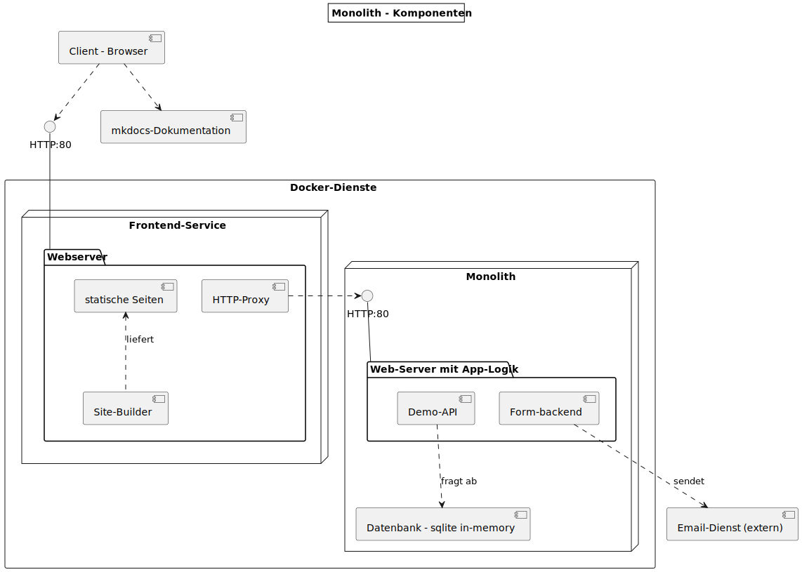
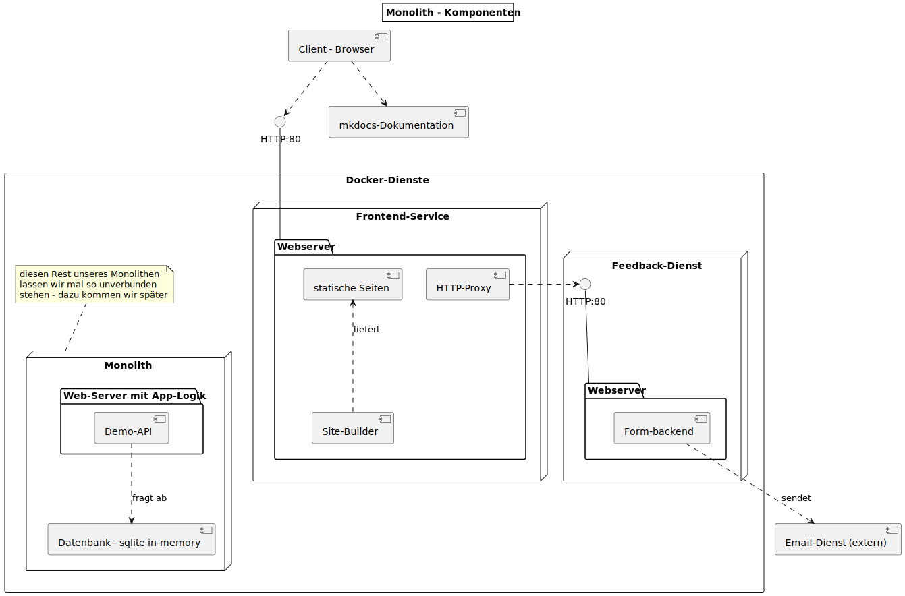

{% extends "../_base_template.html" %}
{% block title %}Lektion 6 - Container für die Entwicklung{% endblock %}

{% block sections %}
<section data-markdown>
<textarea data-template>
# <i class="fas fa-graduation-cap"></i> M347 - Dienste verbinden - Networking

## Heutiges Ziel

- Sie kennen das **Networking**-Konzept in Docker
- Sie können Container-Dienste mittels Network miteinander verbinden
- Sie haben aus dem bestehenden Monolithen den Feedback-Formular-Dienst in einen
  eigenen Container extrahiert, welcher vom Frontend-Dienst via Reverse Proxy bedient wird.
</textarea>
</section>


<!-- ----------------------------------------------------------------------------- -->
<section>
<section data-markdown>
<textarea data-template>
# <i class="fas fa-graduation-cap"></i> Auf dem Weg zur Microservice-Architektur

Wir erinnern uns an die Architektur der letzten Lektion:



Bei diesem Szenario haben wir nun einen eigenen Frontend-Dienst, aber immer noch zahlreiche Backend-Dienste
(Feedback, API) in unserem Monolithen "gefangen".

</textarea>
</section>
<section data-markdown>
<textarea data-template>
# <i class="fas fa-graduation-cap"></i> Auf dem Weg zur Microservice-Architektur

Wir wollen nun einen Schritt weitergehen, und den Formularservice als eigenen Dienst aus unserem Monolithen extrahieren:

<div style="display: flex; gap:10px">
  
  <div style="flex-grow: 1;">

* Dazu sollen Sie **den Feedback-Code vom Monolithen extrahieren** und
* in einen **eigenen Docker-Container verpacken** (eigenes Image dazu bauen)
* Danach verbinden wir den Frontend-Dienst mittels **HTTP Reverse Proxy** mit dem Feedback-Dienst

  </div>
</div>

**<i class="far fa-hand-point-right"></i> Warum Reverse-Proxy?**<br />
Wir verwenden hier einen "Reverse Proxy", damit der Client (Browser) nur einen Server "kontaktieren" muss:
Wir verhindern damit ein gängiges Problem von Web-Applikationen, das so genannte Cross-Origin-Problem: <br>
Ein Browser darf standardmässig nur Requests zur Ursprungsdomain, zum Ursprungshost, der Seite machen, nicht zu anderen Domains: Das wäre bei uns aber der Fall:
Wir haben nun verschiedene Dienste unter anderen Hosts am Laufen.

In unserem Fall übernimmt nun die Kommunikation mit dem Feedback-Dienst ein kleines Stückchen Code, ein Reverse-Proxy, der einfach alle Anfragen
vom Client 1:1 an den Feedback-Dienst weiterleitet.


</textarea>
</section>
</section>

<!-- -----------------------------------------------------------------  -->
<section data-markdown>
<textarea data-template>
# <i class="fas fa-flask"></i> Umbau - Extrahieren des Feedback-Dienstes

Als Erstes wollen wir den Feedback-Dienst, also die **`/feedback`**-Route, wiederum als eigenen Dienst extrahieren,
und diesen danach dem Frontend zur Verfügung stellen.

## Extrahieren Sie den Feedback-Dienst

Wie in der letzten Lektion mit dem Fontend, wollen wir den Feedback-Dienst in einen eigenen Container verpacken:

1. Erstellen Sie einen eigenen Container (mit Dockerfile) für den Feedback-Dienst (Basis-Image: `node:16`).
2. Kopieren Sie die notwendigen Dateien vom `/monolith`-Ordner (server.js, und was noch?)
3. Minimieren Sie den neuen Server-Dienst (`server.js`), sodass dieser NUR noch den Code für den
   **`/feedback`-Dienst** beinhaltet
4. Starten Sie damit einen Container, der den Dienst über einen TCP-Port verfügbar macht!

</textarea>
</section>

<!-- -----------------------------------------------------------------  -->
<section data-markdown>
<textarea data-template>
# <i class="fas fa-flask"></i> Umbau - Proxy für Backend-Zugriff, Networking

Unser Formular-Dienst (URL bisher: '`/feedback`') läuft nun in einem eigenen Container-Dienst:<br>
**wir wollen aber, dass der Client (Browser) weiterhin diese URL "anziehen" kann.**

Da der Frontend-Dienst diese URLs nun aber nicht mehr selber anbietet, reichen wir diese URL's an unser Backend "durch":
Dazu richten wir folgendes ein:

* ein **HTTP-Proxy** nimmt auf unserem Frontend-Dienst weiterhin Anfragen zu den genannten URL's entgegen
* Dieser Proxy leitet diese Anfragen 1:1 an unseren Feedback-Dienst weiter
* Damit Front- und Feedback-Dienst miteinander kommunizieren können, verbinden wir diese mit einem **Docker-Network**.

## Schritt 1: HTTP-Proxy auf Frontend-Dienst einrichten

1. Wir installieren im **Frontend-Dienst** das NodeJS-Paket **http-proxy**:

```sh
shell > docker exec -ti frontend bash
docker> npm install --save http-proxy
```

2. Wir richten den Proxy im Frontend-Code (`frontend/server.js`) ein:

```js
// ... zuoberst: Import der notwendigen Pakete:
const httpProxy = require('http-proxy');
const proxy = httpProxy.createProxyServer();

// Die Basis-URL unseres Feedback-Dienstes. Achtung: der Hostname ist der Docker-Container-Name:
const feedbackServer = 'http://feedback:3000';
// wir können auch weiterhin unseren Monolithen anziehen:
const backendServer = 'http://monolith:3000';

/** -------------- Reverse Proxy für Backend-Routen --------------- */
app.all("/feedback", function(req, res) {
  console.log('Reverse-Proxy für Feedback-Form');
  proxy.web(req, res, {target: feedbackServer});
});
app.all("/api/save-text", function(req, res) {
  console.log('Reverse-Proxy für API: save-text');
  proxy.web(req, res, {target: backendServer});
});
app.all("/api/get-texts", function(req, res) {
  console.log('Reverse-Proxy für API: get-texts');
  proxy.web(req, res, {target: backendServer});
});
```
</textarea>
</section>

<section data-markdown>
<textarea data-template>
# <i class="fas fa-flask"></i> Umbau - Proxy für Backend-Zugriff, Networking

## Schritt 2: Frontend- und Backend-Dienst via Network verbinden

Die laufenden Container "leben" in isolierten Umgebungen: Sie können untereinander nicht kommunizieren. Dies ist ein
Sicherheitsfeature "by design". Damit sie miteinander via Netzwerk kommunizieren können, müssen wir ein Docker Network dazu erstellen:

<https://docs.docker.com/network/>

1. Wir geben unseren Containern "erkennbare" Namen

Beim Starten des Containers können wir einen eigenen Hostnamen definieren. Machen wir das nicht, "erfindet" Docker selber einen,
und wir müssen bei jedem Container-Start unsere Applikationsparameter anpassen. Das wollen wir nicht. Wir starten also unsere Container mit richtigen Namen:

```sh
shell > docker run --name frontend -ti --name frontend ....
shell > docker run --name feedback -ti --name feedback ....
shell > docker run --name monolith -ti --name monolith ....
```

Nun sind die Container-Hostnamen fix definiert.

2. Wir erstellen ein eigenes Docker Network

```sh
# Wir erstellen ein neues Bridge-Network namens "m347":
shell > docker network create m347
```

3. Wir verbinden die beiden Container via Netzwerk

```sh
shell > docker network connect m347 frontend
shell > docker network connect m347 feedback
shell > docker network connect m347 monolith
```

<i class="far fa-hand-point-right"></i> So können unsere Container intern via TCP-Netzwerk über den Hostnamen "miteinander reden",
unser Reverse-Proxy kann somit die Anfragen an den richtigen Host weiterleiten.

</textarea>
</section>
</section>

<section data-markdown>
<textarea data-template>
# <i class="fas fa-flask"></i> Zusammenfassung - neue Konzepte

Wir haben in diesem Kapitel diverse neue Konzepte eingeführt:

- **Volumes**: Anhängen von Datei-Ressourcen, z.B. ein lokales Host-Verzeichnis:<br>
  Siehe <https://docs.docker.com/storage/volumes/>

- **Port Mapping**: Host- und Container-TCP-Ports miteinaner verbinden:<br>
  Siehe <https://docs.docker.com/engine/reference/commandline/run/#publish-or-expose-port--p---expose> und <https://docs.docker.com/engine/reference/commandline/port/>

- **Networks**: Container via ein TCP-Netzwerk untereinander verbinden:<br>
  siehe: <https://docs.docker.com/network/>

</textarea>
</section>

{% endblock %}
